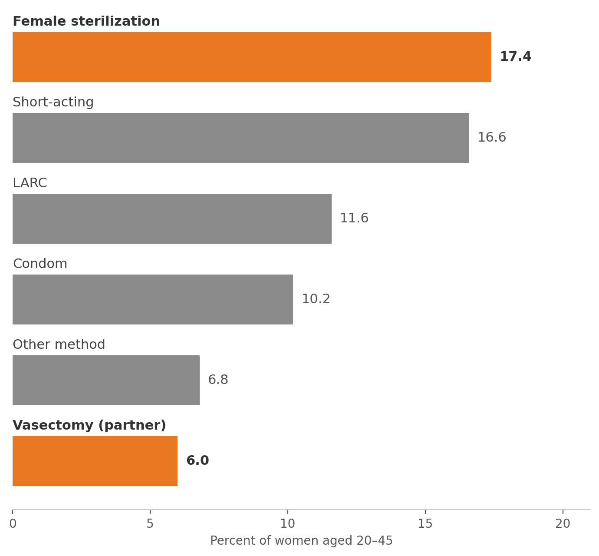
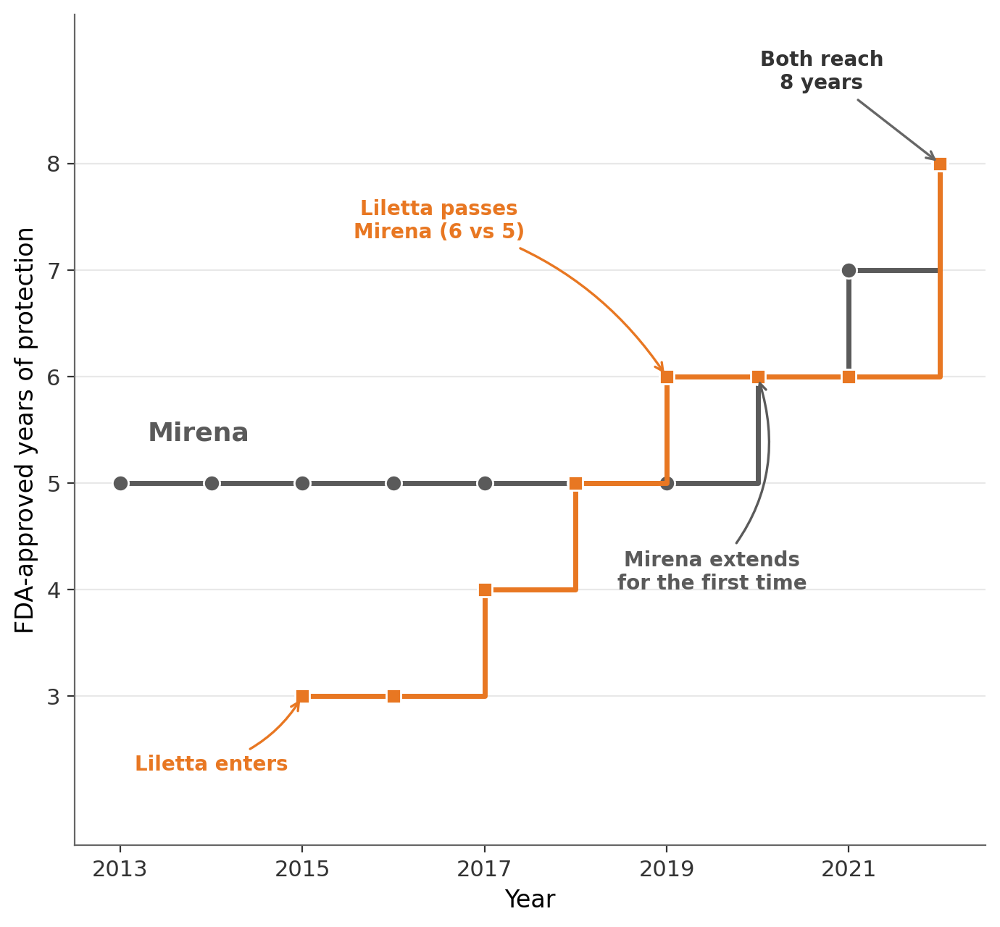

Camille Wixon
PhD Candidate in Economics
University of Virginia
Health Economics · Industrial Organization · Labor Economics
I am a PhD candidate in Economics at the University of Virginia. My research is in health economics with a focus on contraceptive markets.
I am on the academic job market for 2026–2027.
Job Market Paper
The Price of Permanence: A Study of Household Contraceptive Choice including Sterilization
Last updated: November 2026
In 2015-2017, 17% of women aged 20-45 relied on female sterilization for contraception, compared with 5% who relied on a partner’s vasectomy. The Affordable Care Act’s contraceptive mandate requires coverage of female sterilization but imposes no equivalent requirement for vasectomies, leaving households facing substantial out-of-pocket costs. Motivated by this policy asymmetry, this paper estimates household contraceptive demand using a nested logit model and MarketScan claims data on approximately 14.2 million observations from 2015-2017. Estimates reveal a strong aversion to permanent contraception, but a preference for male sterilization, with households indifferent between paying $346 for a vasectomy and female sterilization at zero cost, holding other characteristics constant. Consistent with differences within couples in preferences for the male contraceptive method, I find the valuation of vasectomy increases by $85 with each standard-deviation increase in a proxy for female bargaining power. Eliminating out-of-pocket costs for vasectomy increases predicted annual uptake 87 percent from 1.58 to 2.95 percent, increasing overall contraceptive use by 1.26 percent, as some additional vasectomies substitute for existing methods. These findings carry implications for contraceptive coverage policy, suggesting that eliminating vasectomy cost sharing can increase permanent contraceptive adoption while reducing the financial and medical burdens associated with sterilization.

Contraceptive method use among women aged 20–45, 2015–2017 (NSFG).
Working Paper
Refills and Renewals: Hassle Costs in the Contraceptive Market
Last updated: November 2026
In 2020, following the entry of a close competitor, Mirena, a leading hormonal intrauterine device (IUD), received its first extension of labeled duration after two decades on the market. Over the same period, 21 jurisdictions adopted laws allowing pharmacists to prescribe hormonal contraception. These developments reduced two forms of hassle costs: the burden of obtaining contraception and the frequency of returning to a provider to maintain protection. I estimate a nested logit model of contraceptive demand using Medicaid State Drug Utilization Data from 2015-2022. Counterfactual simulations show that extending Mirena’s labeled duration by one year increases annual long-acting reversible contraceptive (LARC) insertions by approximately 14 percent and overall prescription contraceptive use by 2.8 percent. Nationwide pharmacist prescribing similarly increases use of eligible short-acting methods by approximately 7 percent and overall prescription contraceptive use by 4.1 percent. These responses demonstrate that reducing hassle costs induces substitution between methods while also expanding the prescription contraceptive market. In a further counterfactual, extending LARC durations to those supported by available clinical evidence generates approximately 226,500 additional annual insertions and averts an estimated 26,000 unintended pregnancies, yielding $31.8 million in projected annual net Medicaid savings after accounting for changes in contraceptive expenditures and the implied savings from avoided deliveries.

FDA-approved duration of Mirena and Liletta, 2013–2022.
Work in Progress
Stockpiling under Political Uncertainty: Evidence from Ammunition Sales (with Marcella Cartledge and Yiren Ding)